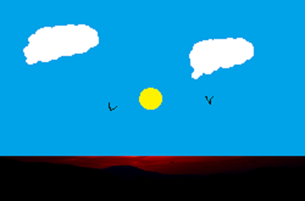

Técnica de obtención de imágenes por la acción química de la luz sobre una superficie con unas características determinadas, La fotografía es el arte y la técnica de obtener imágenes duraderas debido a la acción de la luz, es el proceso de proyectar imágenes, capturarlas y plasmarlas bien por medio del fijado en un medio sensible a la luz o por la conversión en señales electrónicas.
